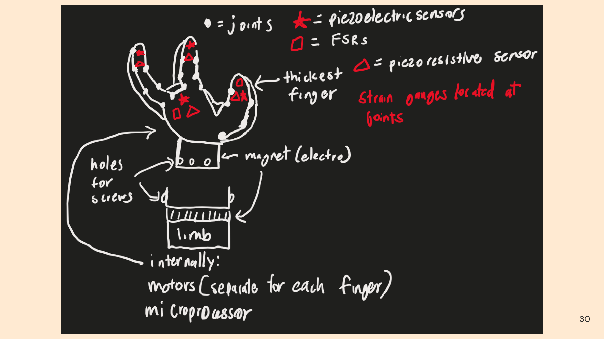

ESB Modular Gripper · Fall 2025


Fall 2025 technical interview — designed a modular prosthetic gripper with adaptive force control and sensor feedback, sized to handle anything from an egg to a heavy object. Justified every choice within my design.